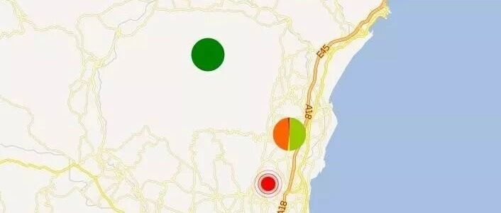

20181226意大利西西里5.0级地震破坏力分析
致谢和声明
感谢意大利ISMD为本研究提供数据支持。本分析仅供科研使用，具体灾情和灾损分析应根据现场调查情况确定。
一、地震情况简介
当地时间12月26日2时19分在意大利西西里发生5.0级地震，震源深度1.0千米，震中位于北纬37.63度，东经15.10度。
二、强震记录及分析
20181226意大利西西里5.0级地震获得了3条地震动，由于地震动没有完全收集，可能还有更强的记录。典型地震记录分析如下：
EVRN台站位置为北纬37.69度，东经15.14度(图1)，记录到水平向地震动峰值加速度为217.269cm/s2，竖直向地震动峰值加速度为56.651cm/s2。该地震动如图2、图3所示。

图1 EVRN台站位置

(a) EW

(b) NS

(c) UD
图2 EVRN台站地面运动记录

图3 EVRN台站记录反应谱
三、地震动对典型城市区域破坏能力分析
利用密布强震台网在震后获取的实时地震动信息，再结合城市抗震弹塑性分析，就可以得到地震发生后不同地点的建筑破坏情况，为抗震救灾决策提供科学支撑。图4为根据20181226意大利西西里5.0级地震震中附近范围内台站记录分析得到的建筑震害分布示意图，分析区域建筑参考类似地区。点击“阅读原文”可以查看网页版地震力分布图。

图4(a) 20181226意大利西西里5.0级地震不同台站地震记录破坏力分布图
（建筑抗震承载力取均值）

图4(b) 20181226意大利西西里5.0级地震不同台站地震记录破坏力分布图
（建筑抗震承载力取均值加一倍标准差）

图4(c) 20181226意大利西西里5.0级地震不同台站地震记录破坏力分布图
（建筑抗震承载力取均值减一倍标准差）
四、地震动对典型单体结构破坏能力分析
(1) 对典型多层框架结构破坏作用
模型1：六层框架结构
将EVRN台站记录输入立面布置如图5 (a)所示的6度、7度和8度设防的典型六层钢筋混凝土框架结构，得到其层间位移角包络如图5 (b)所示。


(a) 立面布置示意图
(b) 层间位移角包络图
图5 典型六层钢筋混凝土框架结构
模型2：三层框架结构（感谢中国建筑设计研究院王奇教授级高工提供模型）
将EVRN台站记录输入立面布置如图6 (a)所示的6度、7度和8度设防的典型三层钢筋混凝土框架结构，得到其层间位移角包络如图6 (b)所示。


(a) 立面布置示意图
(b) 层间位移角包络图
图6 典型三层钢筋混凝土框架结构
(2) 对典型超高层结构破坏作用
模型1
将EVRN台站记录输入图7 (a)所示某典型超高层结构1，得到其层间位移角包络如图7 (b)所示。


(a) 结构布置示意图 (b) 层间位移角包络图
图7 典型超高层结构1
模型2
将EVRN台站记录输入图8 (a)所示某典型超高层结构2，得到其层间位移角包络如图8 (b)所示。


(a) 结构布置示意图 (b) 层间位移角包络图
图8 典型超高层结构2
(3) 对典型砌体结构破坏作用
模型1：单层未设防砌体结构
选取图9所示纪晓东等开展的单层未设防砌体结构振动台试验模型，输入EVRN台站记录，分析结果表明该结构将处于中度破坏状态。（纪晓东等，北京市既有农村住宅砖木结构加固前后振动台试验研究，建筑结构学报，2012,11,53-61.）

图9 单层三开间农村住宅砖木结构振动台试验
模型2：五层简易砌体结构
选取图10所示朱伯龙等开展的五层简易砌体结构足尺试验模型，输入EVRN台站记录，分析结果表明该结构将处于轻微破坏状态。（朱伯龙等，上海五层砌块试验楼抗震能力分析，同济大学学报，1981,4,7-14.）


(a) 平面图
(b) 剖面图
图10 五层简易砌体结构布置
模型3：四层设防砌体结构
选取图11 所示许浒等提出的四层设防砌体模型，输入EVRN台站记录，得到其门洞墙和窗洞墙层间位移角包络如图11 (b)所示。（许浒等，砌体结构在地震下的非线性计算模型，四川建筑科学研究，2011(06): 170-175.）


(a) 平面布置和模型示意图

(b) 层间位移角包络图
图11 典型多层砌体结构
(4) 对典型桥梁破坏作用
模型1：某80年代公路桥梁（感谢福州大学谷音教授提供模型）
选取图12所示某80年代公路桥梁模型，输入EVRN台站记录，分析结果表明该桥梁将处于中度破坏状态。

图12 某80年代公路桥梁模型
模型2：某特大桥引桥（感谢福州大学谷音教授提供模型）
选取图13所示某特大桥引桥模型，输入EVRN台站记录，分析结果表明该桥梁将处于完好状态。

图13 某特大桥引桥模型